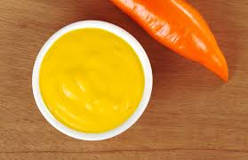

Home
Family Sauce

Aji Amarillo Sauce
A sauce served with most peruvian dishes, this spicy creamy sauce
is made with few ingredients. Unlike most salsas this recipe will not
require a blender or time in the fridge to cool down. Once made it is ready
to compliment your peruvian dish!
Ingredients
- Aji Amarillo Paste commonly found in hispanic grocery stores
- Mayonaise
Steps portions for two
- Add 2 spoons of mayo into small bowl
- Add 1 spoon of Aji Amarillo to mayo
- Mix together until color forms a lighter yellow
- Taste and add more aji to reach desired spiciness
- Add more mayo to reach desired coolness
- Enjoy!